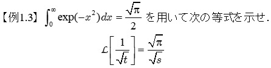

図 1:

(%i1)
f
(
t
)
:
=
1
/
sqrt
(
t
)
;
/*関数の定義*/
(%o1)
f
(
t
)
:=
1
t
(%i2)
/*関数f(t)のラプラス変換*/
laplace
(
f
(
t
)
,
t
,
s
)
;
(%o2)
π
s
-->
/*【コメント】教科書p6のような解き方をしなくても，Maximaだと
コマンド１行でラプラス変換の結果が得られる．*/
;
Created with
wxMaxima
.
The source of this Maxima session can be downloaded
here
.